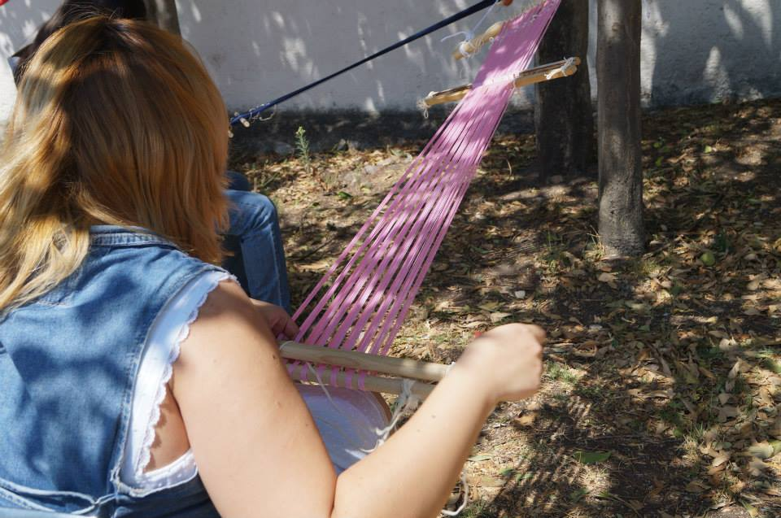

Rena
Bio
Mente inquieta nacida en la ciudad de Mexico, Karla Lorena aka Rena inquieta, inventiva, con una formacion multidiciplinaria, que incluye disiplinas como la fotografia, teatro, cinematografia (cortometraje), artes visuales, egresada de la Escuela de Artesania del INBAL con la especialidad en textiles y la subespecialidad en ceramica, actualmente forma parte de la 4 generacion de Laboratoria
- Fotografia
- Estenopeica
- Foto-producto
- Fotografia de estudio
- Retrato
- Artes Visuales
- Textiles
- Tinccion con tintes naturales
- Telar de marcos
- Sarape
- Repaso Seguido
- Damasco
- Mil rallas
- Telar de cintura
- Telar de alto lizo
- Telar de bajo lizo
- Ceramica
Tres metas que tengo
- Conocer un pais diferente cada año
- Poder ayudar a mi comunidad con el desarrollo de algun programa que ayude a los chicos a mantenerse lejos de las adicciones
- Conservar la capacidad de asombro
